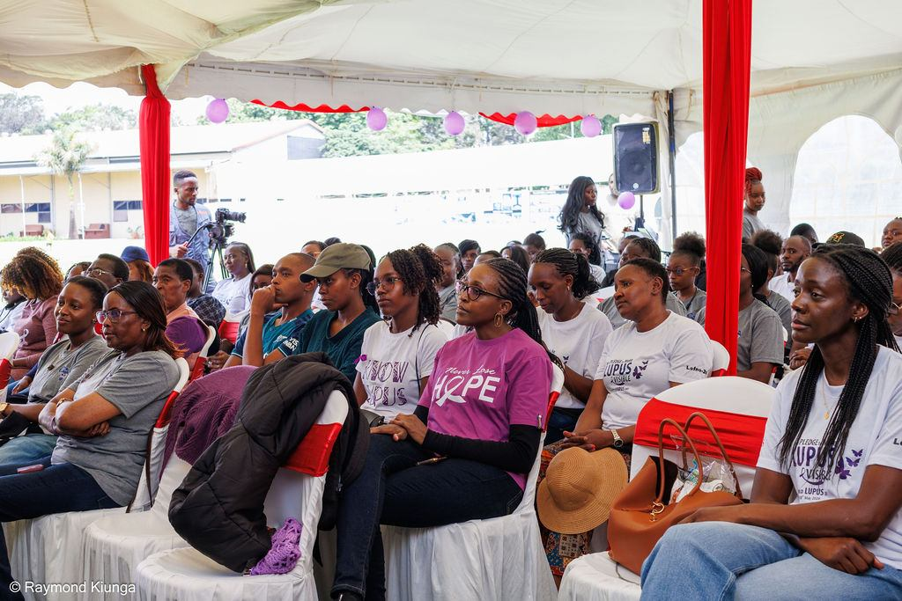
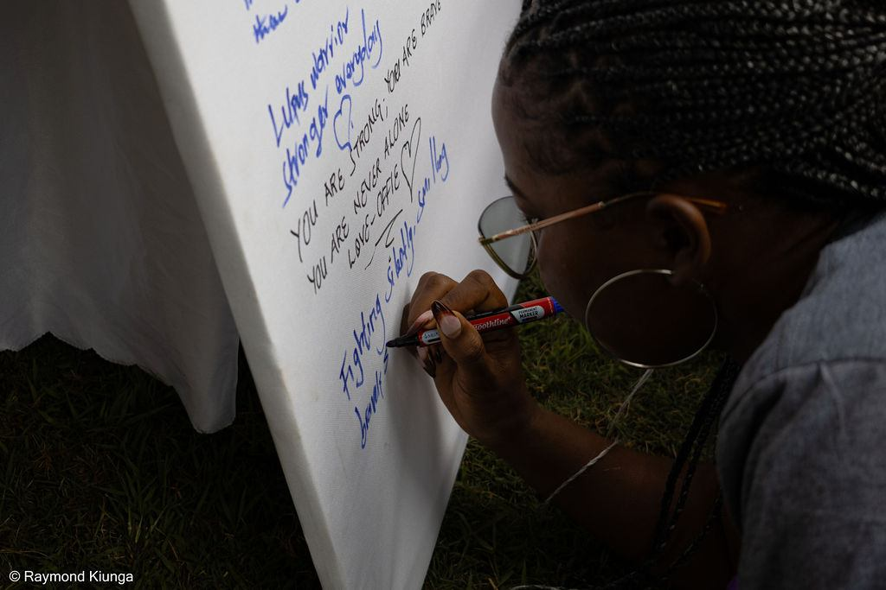
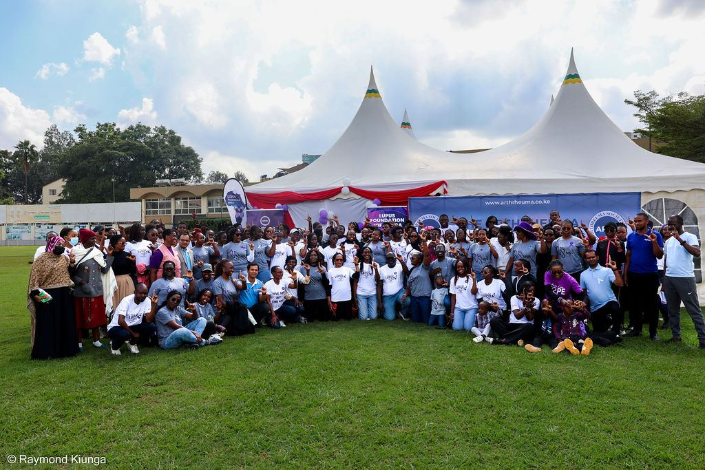

Awareness, Advocacy & Policy
Build understanding, challenge stigma, amplify patient voices, and influence health policies, financing and systems, so that lupus is recognised as a public health priority.
Our advocacy workThe Lupus Foundation of Africa empowers people affected by lupus through information, support, advocacy and action, helping build a future where every person with lupus can live a full and dignified life.
Our reach
From its roots in Kenya, LFA has become a grassroots platform through which the voices and experiences of people living with lupus can influence healthcare systems, policies, research and public understanding.
Figures reviewed and updated annually.


Who we are
The Lupus Foundation of Africa is an African patient-led, patient-centred organisation dedicated to improving the lives of people affected by lupus and other autoimmune conditions across the continent.
Established in 2013, LFA was founded on a simple conviction: people living with lupus in Africa deserve to be seen, heard, diagnosed early, treated appropriately, and supported to live healthy and dignified lives.
Across Africa, lupus and many autoimmune rheumatic diseases remain poorly understood and significantly under-recognised. Many people experience years of delayed or missed diagnosis, limited access to specialist care and essential medicines, financial barriers to treatment, stigma, and inadequate long-term support.
LFA works to help change this reality.
How we drive change
Our integrated approach connects awareness, patient support, evidence and advocacy to drive better outcomes for people living with lupus.
Build understanding, challenge stigma, amplify patient voices, and influence health policies, financing and systems, so that lupus is recognised as a public health priority.
Our advocacy workDocument lived experiences, generate evidence, and translate learning into policy and practice, ensuring decisions are informed by evidence and patient realities.
Research at LFAConnect patients to information, peer and psychosocial support, diagnostics, treatment and practical assistance, so people living with lupus are better supported to manage their condition.
Patient supportIncrease understanding and challenge myths and stigma.
Build peer connection, psychosocial wellbeing and practical support.
Influence policies, financing and health systems.
Generate and use evidence grounded in patient experience.
Help patients navigate and access timely, affordable, quality care.
I have lupus. What now?
A new diagnosis can feel overwhelming. You do not have to navigate it alone. We have set out the first five things worth doing, in the order that usually helps most.
Voices from our community
Behind every statistic is a person who kept going. These are some of the warriors and caregivers who make up the LFA community.

Lupus warrior · Age 61
“My lupus journey has taught me to take life one day at a time, listen to my body, and give myself grace, even when others may not understand what I am going through.”
Read Isabella's story
Lupus warrior · Eldoret
“Living with lupus has taught me that thriving does not always mean having good days. Sometimes it means getting out of bed when your body is exhausted, going through treatment, and still choosing hope.”
Read Nyambura's story
Caregiver
“Being a caregiver means carrying your own fears while trying to be strong for someone else. Sometimes, we caregivers need support too.”
Read Gloria's storyWhere we work
Our ambition extends beyond national borders. We are working toward a stronger, connected African lupus movement that brings together patients, caregivers, healthcare professionals, researchers, policymakers, civil society organisations and partners.

World Lupus Day 2026, Nairobi. Photo: Raymond Kiunga.
African patients must be at the centre of defining the problems, generating the evidence, shaping the solutions, and influencing the policies that affect their lives.

Latest campaign
9 May 2026 · NairobiHundreds of warriors, caregivers, clinicians and partners walked through Nairobi under one message: Make Lupus Visible.
Hosted with the Aga Khan University Hospital, the day brought together a community walk, a wellness and education programme, a patient pledge wall, and partner recognition. It was a day of visibility, and of being seen.
Get involved
Whether you are living with lupus, caring for someone who is, or simply want to help, there is a place for you in this community.
Join more than 600 warriors and caregivers. Membership connects you to peer support, information and a community that understands.
Join the communityYour contribution helps us reach more people with lupus, provide patient support, increase awareness and advocate for better healthcare.
Ways to giveHealthcare, corporate, research, media, pharmaceutical and donor partnerships that help advance better lupus outcomes across Africa.
Explore partnership